High-Throughput Sequencing
Introduction to Bioinformatics · NGS day 1
Welcome
High-throughput sequencing: from the molecule to the reads.
With slides based on presentations of Nicolas Delhomme and Prof. Nathaniel Street
Deciphering the blueprint of an organism
- 1977: Sanger’s chain-termination method, one fragment per reaction
- 2001: first draft human genome (Human Genome Project and Celera). Full project ran 1990–2003: ~13 years, ~$2.7 billion
- 2022: first complete human genome (T2T-CHM13, gapless except chrY), made with long reads
- Today: a few hundred dollars in reagents and a 1–2 day run
Lander et al. 2001 Nature 409:860; Venter et al. 2001 Science 291:1304; Nurk et al. 2022 Science 376:44; genome.gov HGP cost fact sheet; Shendure et al. 2017 Nature 550:345
This lecture
- Sanger sequencing: the beginning
- Library preparation: DNA and RNA
- Short reads: Illumina and competitors
- Long reads: PacBio and Oxford Nanopore
- Choosing a platform: errors, what’s new, NGI
Sanger sequencing: how it started
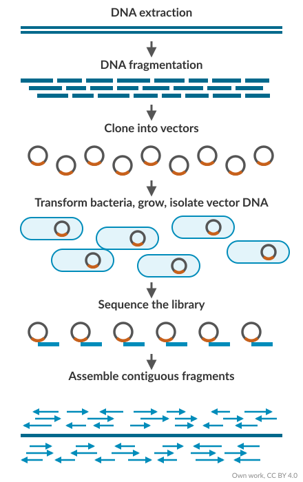
- One reaction per DNA fragment
- Genomes needed clone libraries: lots of lab work, lots of chances for mistakes
- Low throughput: one read (700–1000 bases) per capillary, 96 capillaries per run
- Still used today to check single loci, clones and PCR products
Chain termination
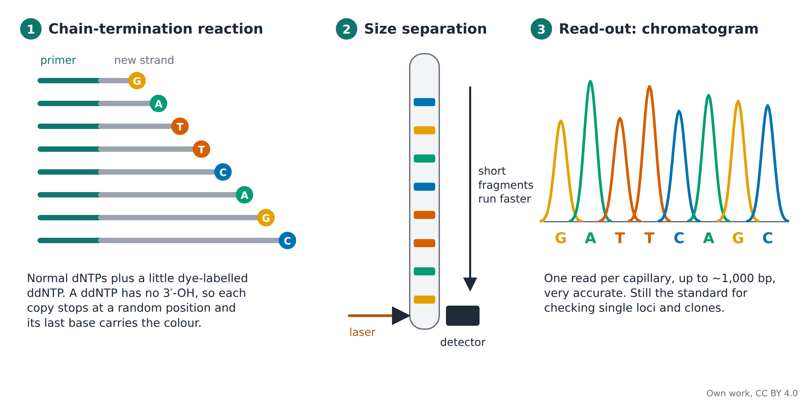
Reading a Sanger trace
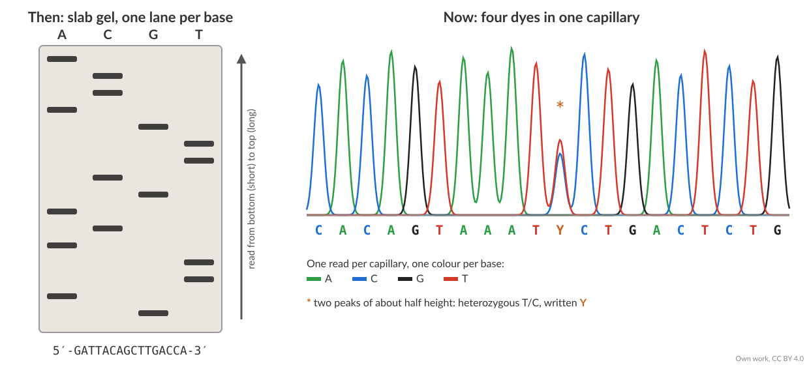
- Then: radioactive slab gels, one lane per base, read by eye
- Now: four dyes in one capillary, read by a laser
- Two overlapping peaks of about half height = a heterozygous position
“Next” (2nd) generation sequencing
- Sequencing-by-synthesis: massively parallel sequencing
- Millions to billions of fragments sequenced at once
- Illumina still dominates, but there is real competition again: Element AVITI, Ultima UG 100/200, MGI / Complete Genomics DNBSEQ, Roche SBX
- Gone: Roche 454, SOLiD, Helicos. Ion Torrent: clinical niche
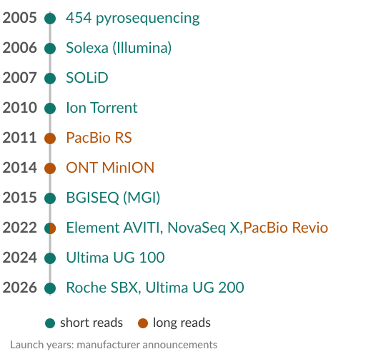
The $1000 genome
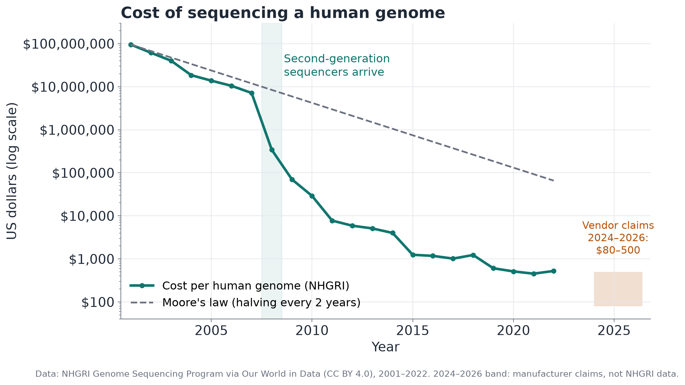
Data: NHGRI via Our World in Data (CC BY 4.0). 2024–2026: manufacturer claims. Figure: own work, CC BY 4.0
Sequencing capacity grows faster than Moore’s law
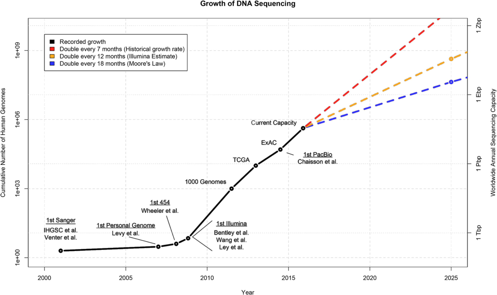
- Computing power per dollar has kept roughly doubling every two years
- Sequencing got cheaper, but computers do not keep up: storing and analysing the data becomes as hard as producing it
- 2015 projection: 100 million to 2 billion genomes by 2025. Reality: a few million
First human genome: 13 years. SciLifeLab 2016: 1 h
Stephens ZD et al. (2015) Big Data: Astronomical or Genomical? PLoS Biol 13:e1002195 (CC BY 4.0)
What can we do with it?
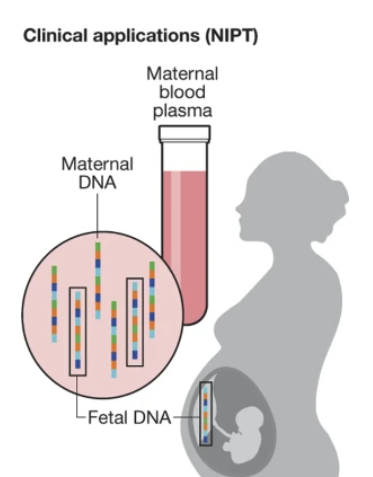
- Non-invasive prenatal testing: fetal DNA in the mother’s blood is sequenced
- The film Gattaca (1997) imagined genetic profiling at birth, less than 30 years ago
NIPT panel: Shendure et al. (2017) DNA sequencing at 40, Nature 550:345 (© Springer Nature)
Preparing DNA and RNA
Turn the sample into a library
From sample to library
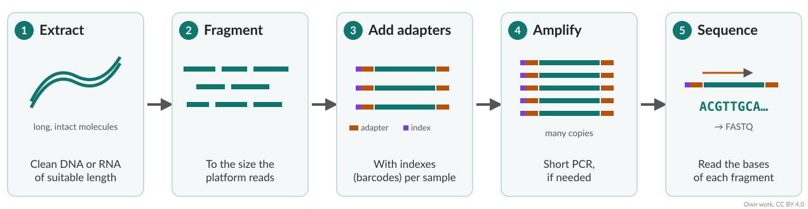
- The extraction method decides what is possible later: purity, fragment length, RNA integrity
- Long reads need high-molecular-weight DNA: no vortexing, no PCR; HiFi sheared to 15–20 kb, ultra-long not sheared
Fragmenting DNA
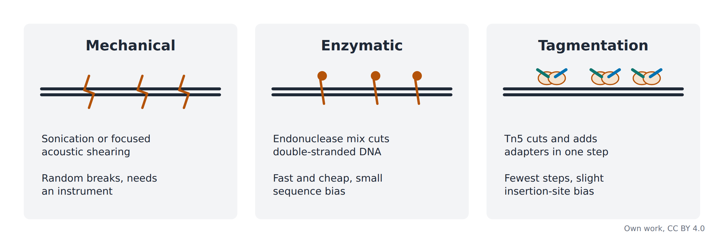
Tagmentation
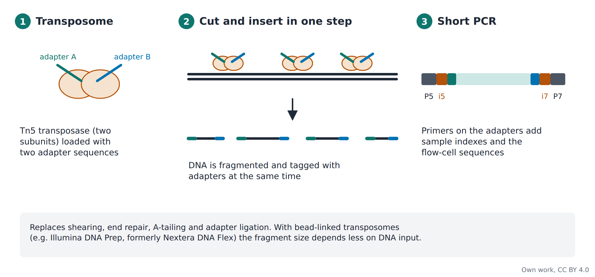
From RNA to a library
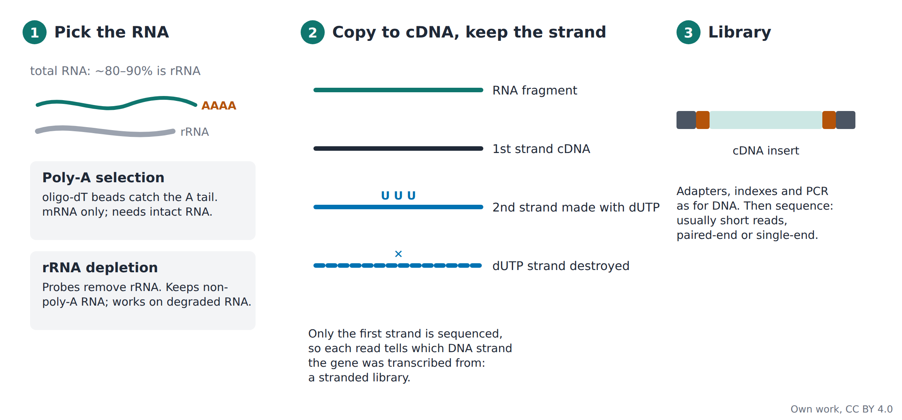
Read types
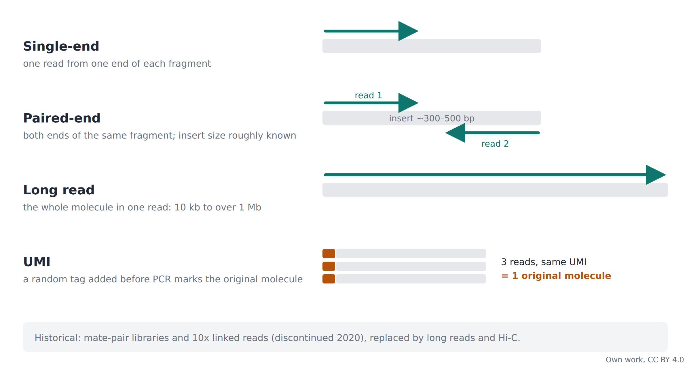
Short-read sequencing
Illumina sequencing by synthesis, and instruments
Illumina: sequencing by synthesis
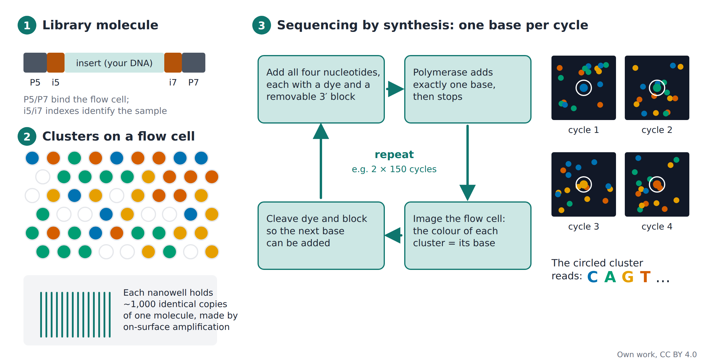
Illumina sequencing by synthesis
Watch the following video to understand Illumina’s sequencing by synthesis:
▶ Overview of Illumina Sequencing by Synthesis Workflow
Illumina, on YouTube
Video: © Illumina, Inc.
This is how it looks
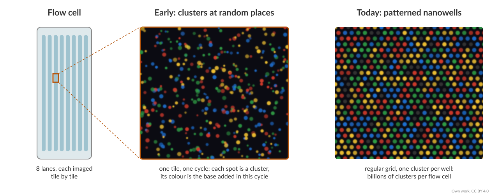
- Lanes are imaged tile by tile
- Each spot is one cluster; colour = base in this cycle
- Early flow cells: clusters at random positions. Today: patterned nanowells, billions of clusters
Improvements: two-colour chemistry
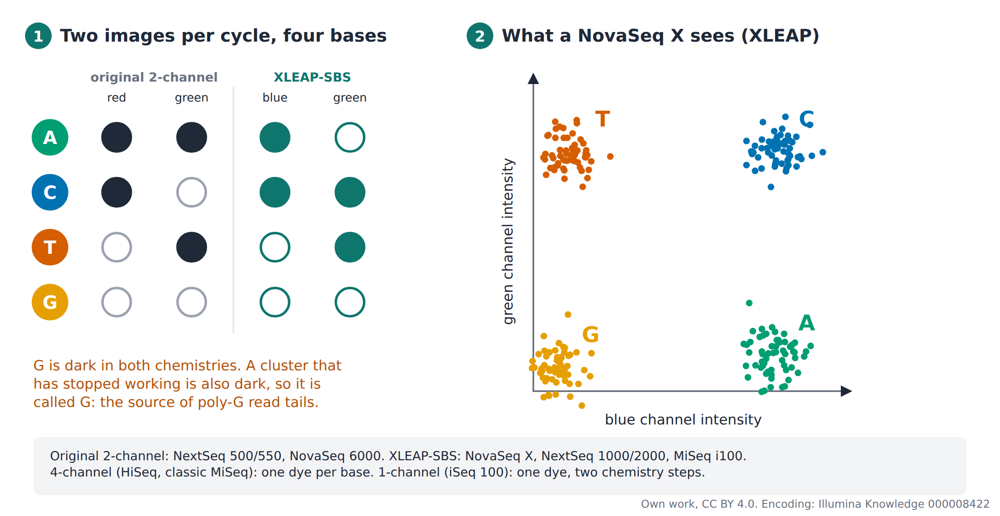
Figure: own work, CC BY 4.0; colour encoding: Illumina Knowledge article 000008422
Long-read sequencing
Third generation: single molecules, long reads
| PacBio HiFi | Oxford Nanopore | |
|---|---|---|
| How | Polymerase copies a circular template, watched in real time | Strand pulled through a protein pore, current is measured |
| Length | 15–20 kb | As long as the molecule, up to > 1 Mb |
| Accuracy | Typically Q30 (99.9%) | ~Q26 (99.75%) per read |
Both: no PCR needed, and methylation is read directly from the native molecule.
Note
- Q20 = 1 error in 100 bases
- Q30 = 1 in 1,000
- Q40 = 1 in 10,000.
Accuracy: manufacturer specifications (PacBio 2024, Oxford Nanopore 2025)
PacBio: single-molecule real-time sequencing
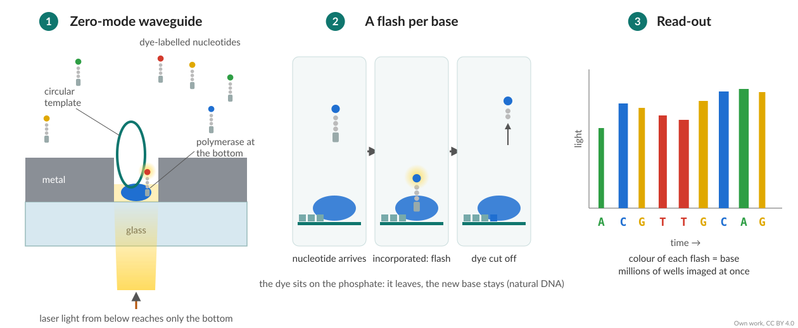
- A polymerase sits at the bottom of a zero-mode waveguide
- Dye on the phosphate: a flash per added base, then the dye is cut off
- Revio: 25 million wells per SMRT Cell
PacBio HiFi: accuracy from repetition
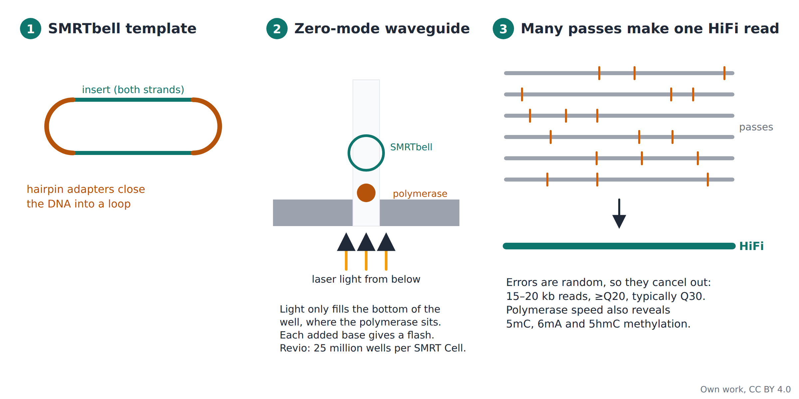
Figure: own work, CC BY 4.0. Revio SPRQ-Nx: ~$345 list, < $300 at scale per HiFi human genome (PacBio press release, 26 May 2026)
Oxford Nanopore
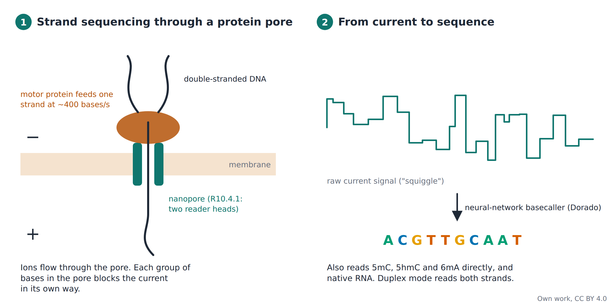
Figure: own work, CC BY 4.0. Accuracy: nanoporetech.com/platform/accuracy (accessed Oct 2026)
Long reads for RNA: whole transcripts
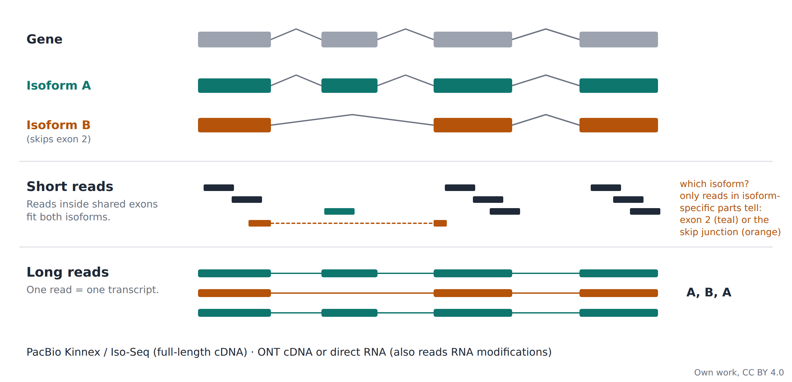
Short fragments can take over a long-read run
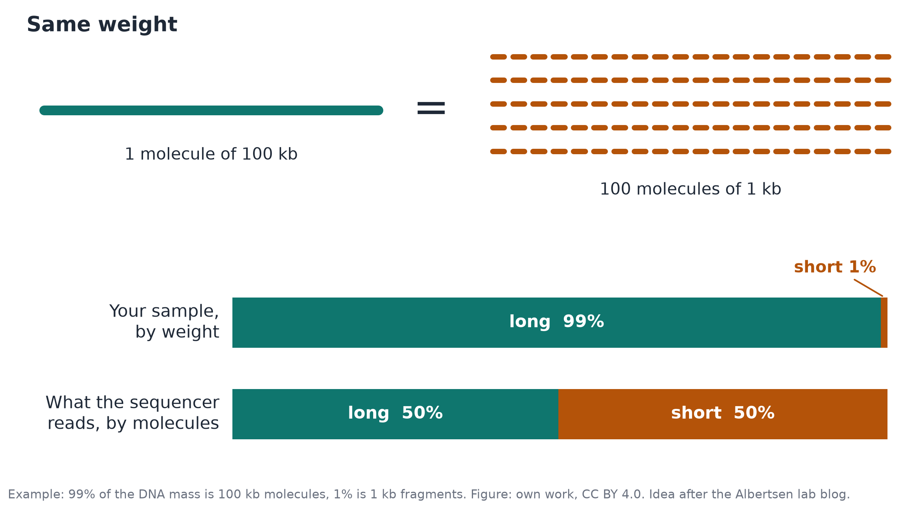
Figure: own work, CC BY 4.0. Idea after a post on the Albertsen lab blog (Aalborg University; no longer online)
Getting long DNA: pulsed-field gel electrophoresis
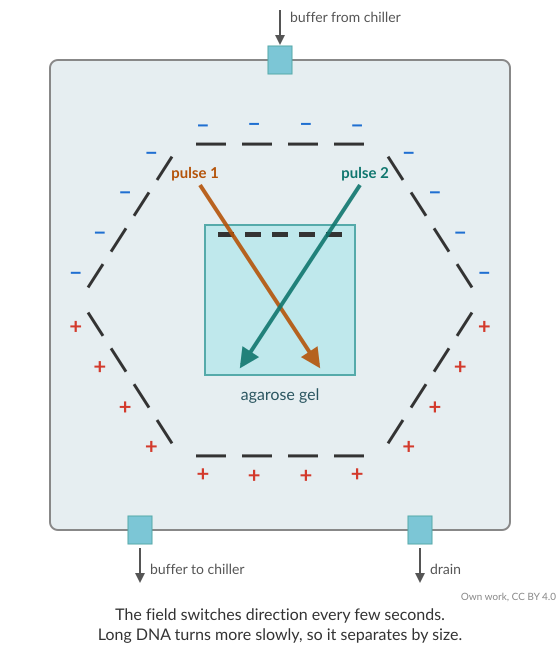
- Gentle extraction: high-molecular-weight DNA
- Fragments > 15–20 kb run together on a normal gel: use pulsed-field gels
- Remove short fragments: gel-based (BluePippin, cut-off ~10–15 kb) or bead-based kits
Read-length distributions and N50
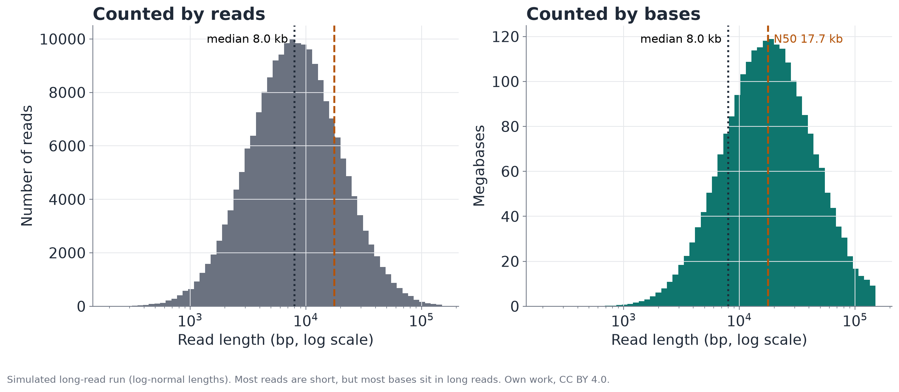
N50: half of all bases are in reads at least this long.
Simulated data. Figure: own work, CC BY 4.0
Choosing a platform
Strengths and typical errors
Which platform for which question?
| Illumina NovaSeq X | Element AVITI | PacBio Revio (HiFi) | Oxford Nanopore | |
|---|---|---|---|---|
| Read length | 2 × 150 bp | 2 × 150 bp | 15–20 kb | As long as the molecule: ~100 bp to > 1 Mb |
| Accuracy | Q30+ | Q30+ (Q40+ with UltraQ) | Q20+, typically Q30 | Q20–Q26 per read (duplex Q30) |
| Best for | Large cohorts, RNA-seq counts, lowest cost per base | Very accurate short reads | Genome assembly, phasing, full-length isoforms | Longest reads, structural variants, direct RNA, field work |
Short reads are cheap and plentiful, long reads span repeats and whole transcripts.
Manufacturer specifications, 2024–2026
Typical errors and where they come from
Homopolymers. AAAAAAA miscounted → false insertions or deletions. Worst on ONT.
Not in FastQC: shows up in variant calls
GC bias. GC-rich or GC-poor regions get fewer reads.
FastQC: per sequence GC content
Poly-G and adapters. “No signal” is called G; short inserts read into the adapter.
FastQC: adapter content → trim
Duplicates. PCR copies inflate coverage. Normal for highly expressed genes.
FastQC: sequence duplication levels
Index hopping. Reads land in the wrong sample.
Prevent with unique dual indexes
Artefact or biology? Think of the technical explanation first.
→ QC lecture and today’s exercises
Höjer et al. (2026) NAR Genom Bioinform 8:lqag053; Illumina and Oxford Nanopore technical notes
News and outlook
New developments and sequencing in Sweden
What’s new in 2026
- Roche AXELIOS 1 / SBX (June 2026): DNA copied into a ~50× longer polymer, read through a nanopore; same-day genomes claimed (research use)
- Ultima UG 200 (Feb 2026): open spinning wafer instead of a flow cell; twice the output of the UG 100, half the run time
- Element VITARI (H2 2026): high-throughput instrument, up to 10 billion reads per run; ~$100 genome claimed
- PacBio SPRQ-Nx (May 2026): HiFi human genome ~$345 list, < $300 at scale; adds 5hmC
Roche release 29 Jun 2026; Ultima (GEN, 23 Feb 2026); Element 2026 roadmap; PacBio release 26 May 2026 (all manufacturer claims)
Sequencing in Sweden: NGI
- Illumina NovaSeq X: short reads at scale
- Element AVITI / AVITI24: accurate short reads, in situ
- PacBio Revio: HiFi long reads
- ONT PromethION: ultra-long reads, direct RNA
National Genomics Infrastructure (SciLifeLab): Stockholm and Uppsala nodes. Ask them for advice on study design before you sequence: ngisweden.scilifelab.se
NGI Sweden methods and technologies pages (accessed Oct 2026)
Learn more
- Shendure J et al. (2017) DNA sequencing at 40: past, present and future. Nature 550:345–353
- Satam H et al. (2023) Next-generation sequencing technology: current trends and advancements. Biology 12:997 (open access; correction: Biology 2024, 13:286)
- Marx V (2023) Method of the year: long-read sequencing. Nature Methods 20:6–11
- Höjer P et al. (2026) Whole-genome sequencing with AVITI and NovaSeq X Plus reveals comparable performance with contextual biases. NAR Genom Bioinform 8:lqag053
- Stephens ZD et al. (2015) Big Data: Astronomical or Genomical? PLoS Biol 13:e1002195
- Goodwin S et al. (2016) Coming of age: ten years of next-generation sequencing technologies. Nat Rev Genet 17:333
Image credits
- Own work (CC BY 4.0): sample to library, pulsed-field gel, PacBio zero-mode waveguide, flow cell, Sanger workflow, gel and trace, chain termination, fragmentation, tagmentation, RNA library, Illumina SBS, two-colour chemistry, read types, PacBio HiFi, nanopore, isoforms, molecule count, read-length and N50 figures
- Cost per genome: data NHGRI via Our World in Data (CC BY 4.0)
- Growth of sequencing: Stephens et al. 2015, PLoS Biol (CC BY 4.0)
- NIPT panel: Shendure et al. 2017, Nature (© Springer Nature)

High-throughput sequencing · Introduction to Bioinformatics